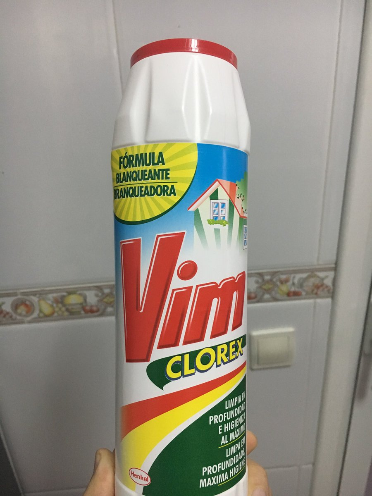

  	<div class="flex-wrap">
      
  	  <article class="tweet  " id="main">
  	    <p class="full_text">
  	      See this is why I live my editor. I can find it everywhere! <div class="gallery"><ul><li><a href="../../tweets_media/1032931742934618112-DlW18IsWsAArQ3B.jpg"></a></li></ul></div>
  	    </p>
  	    <p class="created_at">
  	      8/24/2018, 3:04:53 AM
  	    </p>
  	    <p class="favorite_count">Favs: 6</p>
  	    <p class="retweet_count">Retweets: 0</p>
  	    <a class="permalink" href="../1032931742934618112">link</a>
  	  </article>

  	</div>
  </div>
